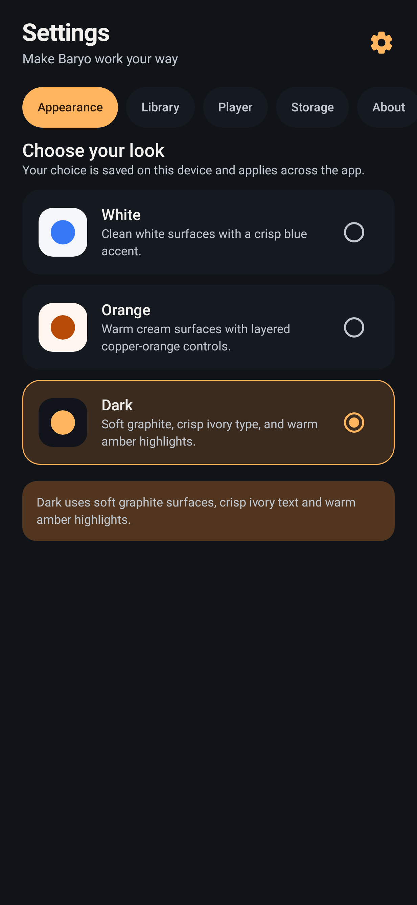

Smart Mix آفلاین
Fresh Finds، Rediscover و Favorites بر پایهٔ کتابخانه و دادههای محلی پخش.
کتابخانهٔ موسیقی روی گوشیات را با کنترل کامل گوش کن؛ از میکسهای محلی و متن همگام تا اکولایزر و پلیلیستهای قابلحمل.
Baryo Music فایلهای صوتیِ کتابخانهٔ گوشی را پخش میکند و امکاناتش را همانجا در اختیارت میگذارد؛ بدون فهرست آهنگ ساختگی یا سرویس استریم پنهان.
Fresh Finds، Rediscover و Favorites بر پایهٔ کتابخانه و دادههای محلی پخش.
ورود LRC و حرکت بین خطها با پخش؛ لمس هر خط برای رفتن به همان زمان.
توقف پس از زمان دلخواه یا در پایان آهنگ در حال پخش.
کنترل مبتنی بر افکت واقعی Android و نشست پخش، با تشخیص پشتیبانی دستگاه.
ورود و خروجی M3U/M3U8 و تطبیق آهنگها با فایلهای موجود در کتابخانه.
اصلاح عنوان، هنرمند، آلبوم و شمارهٔ آهنگ با تأیید مجوز سیستم Android.
افزودن چند آهنگ به صف یا پلیلیست و مدیریت ترتیب پخش.
White، Orange و Dark با رنگهای قابلخواندن و تنظیمات ذخیرهشونده.
برنامه برای پخش به کتابخانهٔ محلیِ نمایهشده توسط Android دسترسی میگیرد. Smart Mix روی خود دستگاه ساخته میشود؛ آهنگها یا تاریخچه برای ساخت میکس به سرویس آنلاین ارسال نمیشوند.
تم تیرهٔ کمخیرگی و نمایش شفاف کنترلهای پخش، در کنار صفحهٔ خانه و مجموعهٔ آهنگها.



راهنمای نصب: فایل متناسب با معماری دستگاه را انتخاب کن؛ اگر مطمئن نیستی، Universal را بگیر. پس از دانلود، اجازهٔ نصب برنامه از این منبع را در Android تأیید کن. این بستهها برای نصب مستقیم ارائه شدهاند و از Google Play دریافت نمیشوند. برای بهروزرسانی، برنامهٔ قبلی را حذف نکن. این APKها با گواهی توسعهٔ Android (Debug) امضا شدهاند، نه کلید امضای تولیدی Google Play؛ برای بهروزرسانی درجا باید همان کلید امضا استفاده شود.
Baryo Music یک پخشکنندهٔ موسیقی برای Android است که برای مجموعهٔ شخصیِ روی گوشی طراحی شده. هدفش ساده است: آهنگهایی را که خودت نگه میداری، با ابزارهای خوب و بدون وابستگی به کاتالوگ استریم گوش کنی.
از مدیریت کتابخانه و پلیلیست گرفته تا متن همگام، تایمر خواب، ویرایش تگ و Smart Mix، قابلیتها بر اساس فایلهای واقعی دستگاه کار میکنند. برنامه آهنگ یا حساب نمونهای همراه ندارد و انتخاب آهنگهای قابلمشاهده به MediaStore و مجوزهای Android وابسته است.
برای پرسش، بازخورد یا گزارش مشکل با ما تماس بگیر.